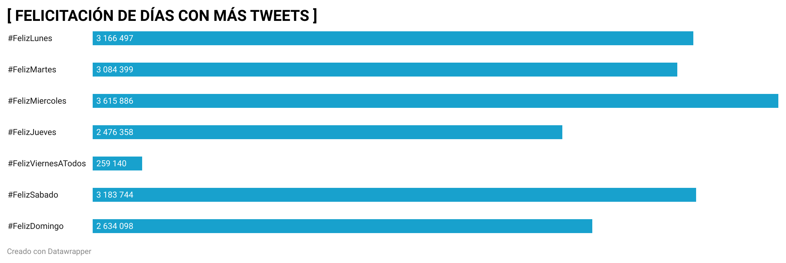

#¿QUÉ DÍA DE LA SEMANA SOMOS MÁS FELICES EN TWITTER?
La norma ISO 8601 es la pauta adquirida a nivel internacional con el objetivo de establecer un mismo formato en la presentación de datos. Así, todo el mundo puede compartir el mismo sistema de horas-minutos-segundos y también de fechas. Pero no sólo eso, también es el que determina la organización de nuestro tiempo en torno a lo que conocemos como semana.
El concepto de semana es definido como el “período de siete días que, según el calendario civil, empieza el lunes y termina el domingo, y, según el calendario litúrgico, empieza el domingo y termina el sábado”. Esta división proviene de la astronomía babilónica, en la que se asignaba el nombre de un planeta, tales como Marte, Saturno, Mercurio, Júpiter, Sol y también, Luna; nombres propios de los que en castellano podemos advertir como los actuales nombres de cada día derivan.
La semana es la manera en la que nuestra vida, aunque sea inconscientemente, se organiza. Todos amamos los fines de semana porque son los días de descanso, de igual modo que se nos hacen cuesta arriba los lunes por ser el inicio de nuestra actividad laboral o escolar. Así, cada uno de nosotros llega a tener un día favorito y un día más odiado de la misma.
Partiendo de esta premisa, se ha realizado un trabajo de periodismo de datos para investigar qué días han sido en Twitter los más “felicitados” por los usuarios, y es que en la comunidad twittera es muy habitual encontrar tweets en los que las personas desean un feliz día al resto de twitteros. Para averiguar estos datos, se ha hecho lo siguiente:
Lo primero fue editar los datos del archivo “feliz” con el OpenRefine. Así, quité todos los hashtag que no tuviesen datos. Para ello seleccioné columna, número, facet, customized facet, facet by null). A continuación seleccioné los “true”, marqué con la estrellita, edit rows, remove. Posteriormente realicé el filtrado de fechas mediante facet y timelime, y lo mismo con el filtrado de texto, mediante timefacet y posteriormente un cluster en la columna 3.
A continuación, a través de los filtros seleccioné “feliz lunes”, rows, start rows para seleccionar los lunes. Una vez realizado con el lunes, efectué los mismos pasos con cad día de la semana y su respectivo hashtag. Una vez marcados, hacemos flechia en all, facet, facet by star, true. Quedando así seleccionados tan solo los datos relativos a los días de la semana.
Una vez alcanzado este punto, exporté el archivo como Excel, y además, abrí otro documento de excel para poder trabajar sobre él. Ene ste segundo documento escribí cada hasthag a analizar. Con la función sumar.si obtuve el total de tweets publicados de cada hasthag registrado durante el periodo de tiempo a analizar.
Una vez finalizado el trabajo en excel, guardé el archivo como csv.
A continuación, abrí datawrapper iniciando sesión con la misma cuenta que github. Una vez en datawrapper seleccioné el gráfico que me pareció más adecuado para ilustrar los datos reflejados. El gráfico conseguido es el siguiente:

Con él, podemos hacernos una idea de cómo son los ánimos de los usuarios respecto cada día. Lo primero en lo que podemos fijarnos es cómo el viernes es el día con menos felicitaciones registradas, un dato que puede deberse al hecho de que los viernes los ánimos ya están lo suficientemente elevados de por sí por tratarse de la antesala del fin de semana, por lo que los usuarios no reparan en expresar sus mejores deseos hacia los demás por esta red social.
En el caso contrario, destaca el hecho de que sea el miércoles, y no el lunes, el día que cuenta con más felicitaciones. Un fenómeno que puede atribuirse a que el lunes la gente se encuentra muy poco animada con el inicio semanal, pero el miércoles, ya inmersos en ella, quieren dar ánimos al resto de usuarios justo en el ecuador de los días laborables, pues habiendo pasado ya el lunes y el martes, tan sólo quedan el jueves y el viernes para llegar al tan deseado fin de semana.
En conclusión, el estudio de estos datos puede resultar de utilidad en un trabajo de investigación más hondo que busque realizar un análisis psico-social de cómo las personas viven su semana y cómo esta y la organización vital que implica afecta en sus ánimos.